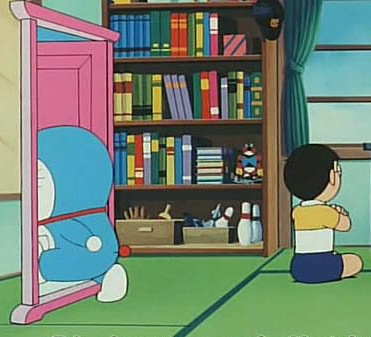

>AR Portal Door
- June, 2017
The world's famous Japanese animation "Doraemon"(First starred in 70s) depicts the story of Nobita, an ordinary boy, after his encounter to a mysterious cat-looking creature called Doraemon. Doraemon is not a mere pet but has special pocket on his belly that brings every nobel inventions to solve daily problems in the most creative way. The most iconic (or repeadly appearing) tool is "Docodemo Door"(translated as "wherever door" in English). When Doraemon pops up an enormous door from his pocket and throws to the floor, it transports people to everywhere they would like to go.
The advent of AR/VR technology enabled us to experience the most surreal effects, and the first thing that I would like to implement was this transspacial door that I've been longing to experience for so many years. (and it seemed it was not only me who has thought in this way :))
DEVELOPMENT
Environment : Unity 3D Development Package : ARCore Testing Device : Galaxy S8
The approached to make a portal door is easily done by applying stencil material to the sphere object according to the viewpoint of the user camera. The following Youtube video helped me to write simple shader code to achieve this effect
RESULT
I mapped license free 360 degree video (You can easily find link from here) to test the code, and the result is shown as following video :) By applying the similar scale to the real object, the effect looks more bizzare.